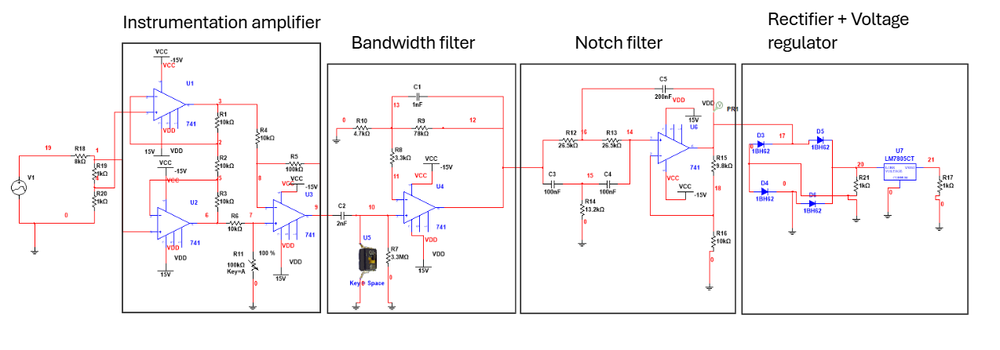

Project Description
This project consisted of designing and building a low-cost EMG system to detect muscle activation from the biceps and classify contraction intensity in real time. The circuit conditions the EMG signal using instrumentation amplification, filtering, rectification, and voltage regulation before sending the signal to an Arduino for processing.
The system was calibrated using a maximum voluntary contraction (MVC) protocol, allowing it to estimate the relative intensity of muscle contractions. Based on the percentage of MVC, the system classifies contractions as low, medium, or high and provides visual feedback through an LCD screen and LEDs. The long-term goal of the project was to explore how EMG signals could be used as proportional control inputs for prosthetic applications. The system asks the user to perform a maximum voluntary contraction and uses that reference value to estimate relative muscle activation. Based on this percentage, the system classifies the contraction as low, medium, or high and provides visual feedback through an LCD screen and LEDs. The long-term purpose of the project was to explore how EMG signals could be used as proportional control inputs for prosthetic applications.

What I Did
- Construction and design of the EMG acquisition circuit.
- Connection of the circuit to Arduino for data acquisition and processing.
- Implementation of calibration based on initial MVC.
- Classification of contractions into interpretable levels.
Video demonstration of the EMG circuit reading muscle activation and displaying contraction intensity feedback.